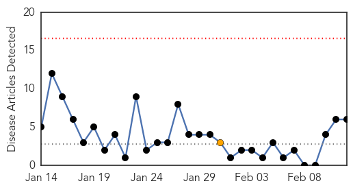
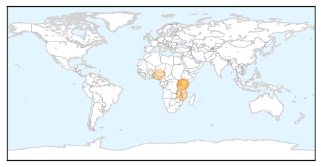

Bubonic Plague
30-Day Web Trend
6 alerts, 0 warnings

30-Day Twitter Trend
0 alerts, 0 warnings

Article Locations

Article Confidences

Top Articles:
-
No articles found for Feb 12, 2015
Top Tweets:
-
No tweets found for Feb 12, 2015
Cholera
30-Day Web Trend
0 alerts, 1 warnings

30-Day Twitter Trend
2 alerts, 0 warnings

Article Locations
Article Confidences
Top Articles:
Top Tweets:
-
No tweets found for Feb 12, 2015